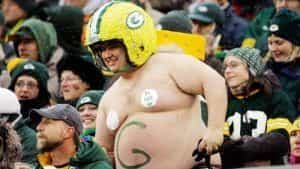

Michael is the author of Staying Married in a Degenerate Age. Follow him on Twitter or Facebook. You can read more of his writing at Honor and Daring.


Here at ROK we usually give advice on what men should do, so now here’s a list of things that you shouldn’t.

Getting fat is one of the worst things a man can do. It makes you less appealing to women which is bad enough if you are married but even worse if you are single. It sets a bad example for your kids and destroys your self-confidence.
It makes it more difficult to move which means you’ll have less inclination to exercise—which will make you even fatter. Your sleep quality will suffer. And you will be at more risk for a whole host of diseases that are caused by poor diet: heart disease, high blood pressure, diabetes, sleep apnea, low libido, and man boobs.
If you are already fat you must make it your first priority to drop the pounds. Start immediately.
You are lifting weights, aren’t you? Never stop. Once a man reaches his mid twenties, he will start to lose 1% of his muscle mass every year. At the beginning, the change is not noticeable but by the time a man reaches his fifties the weakness will begin to be apparent.
There is one sure way to prevent, and even reverse, this trend: weight lifting. In his book Muscle Up, fitness expert P.D. Mangan provides evidence that weight training is better than cardio for keeping the fat off and it has the added benefit of making you look good in the process.
You don’t have to do a six-day bodybuilding split to get benefits of resistance training. Two or three short sessions per week of basic exercises like the deadlift, squat, shoulder press, and pull ups is sufficient to maintain your muscle mass on a busy schedule.

The symbol for man is a circle with an arrow pointing outward. Men are oriented outward by nature. We are meant to be active in the world fighting, trading, toiling, and ruling. It is not part of our character to be passive or to give up.
Compare the male symbol with the symbol for female.

Some speculate that the origin of the symbol for woman is a mirror, which women have used throughout history. Where men are oriented toward the outside world, women are directed inward. Women, by nature, are not meant to be out there trying to make a mark in the world. Their role is to be wives and mothers. Men and women are complementary.
Given the difficult environment that we live in today, lots of men have just given up. Men must always resist that temptation. There are times when you may temporarily withdraw from the heat of battle to regain your strength. Once you have, it is back to arms.
There is a huge push going on to persuade young men and women that gender and sexuality are fluid and that everything is along a continuum. Children as young as elementary school age are being indoctrinated. In our high schools and colleges, sexual experimentation is presented as being normal. This is a lie meant to destroy the young.
There is a reason that the elite are pushing this lie. Once a man engages in an unnatural activity with another man, he is more likely to label himself as being some sort of sexual deviant—one of the 71 possible Facebook genders. He will be a permanent member of the left and dedicate his life to fighting against all that is good.
This is the general rule: Sex is good. Food is good too but if you indulge inappropriately it will damage your health. Be moderate in all things and don’t go against the natural law.

Watching sports, like anything in moderation, can be a harmless diversion but it gets silly once you start buying overpriced swag from your favorite teams. Professional sports are dominated by owners who faithfully peddle the SJW line on every point. The NFL is the worst of these. It has been pushing feminism just as hard as Hollywood. Don’t let your hard earned dollars go to fund these leftist fat cats.
Besides, why on earth would you wear a shirt with another man’s name on the back?
There is one exception to this rule. If your son is a fan of a particular player it’s obviously acceptable to wear matching jerseys—it is for a higher good.
About 40% of children born in the US are now bastards. In the black community it is 70%. This is a gigantic societal problem because children need their father living with them. Without a father girls tend to be sluttier. Boys who don’t have a father lack confidence and may find themselves struggling to find their place in the world. The elites love bastardy because it creates a population that is easier to rule.
Can children overcome not having their father living with them? Of course. If the father is very dedicated to spending copious amounts of time with his children they still stand a chance of growing up healthy, but why risk it?
By the way, there was a time when siring bastards was highly discouraged. Bastard children could not even inherit wealth from their father. It was an unfair system but it was in place for a reason. It was a strong deterrent to men and women from having unprotected sex outside of marriage. We need to re-implement the stigma that is attached to having a bastard. Using the ugly word ‘bastard’ is one small way to begin bringing this deterrent back.

A good woman is one of the greatest blessings you will ever find. For overall happiness, a string of one-night stands does not hold a candle to her. But even the best woman is a creature just like you. While she deserves to be cherished she does not deserve to be put on a pedestal. If that applies to the woman that you marry, it applies even more to women that you date.
The irony is that if you hold women in too high regard, they will treat you poorly in return. Make a woman your “everything” is a sure way to get dumped or cucked. This is because women were never meant to be a man’s reason for living. A man must have a higher calling—a higher mission—than just being Sally’s husband or boyfriend.
I can’t tell you what your mission is. For some, it will be ushering in the kingdom of God. For others it may be bringing about a sane political order, becoming a champion mixed martial artist, or starting a successful company. Whatever it is, never lose sight of your mission. The woman will come along as part of it.
Read More: 5 Things I Learned About Women This Week